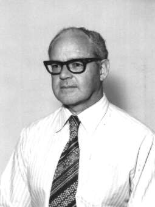

This page contains a few selected references to work that I have done over the years. The picture is of me at about the time I completed my Masters Degree at the Adelaide University. The thumbnail photo of me on my home page was taken in 1998.
A few references of interest to me
"Technical Handbook for Traffic Data Recorder", by D.N. Warren-Smith and P.W. Van Heerden, Electrical Engineering Division, National Physical Research Laboratory, South African Council for Scientific and Industrial Research, Pretoria. 18 February 1960. This project got me started with the use of logical design methods. We used dual triodes for flip-flops and diode gate circuits. Data was stored on punch paper tape to be fed to a Stantec Zebra computer which used similar components in its construction.
Arrived in Australia from South Africa in March 1960.
"The Logical Design of a Digital Integrator for Real Time Control Applications", APD 2, Weapons Research Establishment. December 1964.
"The WRESAT Timing Unit", TSD 97. (Joint author with P.J. Oswald). July 1969.
B.Sc. Degree, Adelaide University, - Completed Nov. 1971, conferred May, 1972.
"A Digital Filter for Data Smoothing", Tech Memo. 1191 (AP), Oct. 1974.
Nov. 1975 - Jan. 1979. Deputy Station Director at Alice Springs during stage A of the Jindalee project.
M.Sc. Degree, Adelaide University, - Completed Nov. 1979, conferred July, 1980.
Thesis title: "Automated Multifrequency Measurements of Ionospheric Movements", November 1979. An outline of the results presented in my thesis can be found in: "An Automated Equipment for the Measurement of the Direction of Arrival of High Frequency Radio Waves", D.N. Warren-Smith, Journal of Electrical and Electronic Engineering, Australia - IE Aust. & IREE Aust., Vol. 1, No. 3, September, 1981. Presented at the IREE Symposium, "Problems in Radio Communications - Solutions and Advances", Adelaide 19-20 August 1980.
"The GPS based Timing System for Jindalee", Presented at: Electronics '92 Conference & Exhibition. Held at Regency College of TAFE, South Australia, September 29 - October 1, 1992. pp 172.. (13 pages).
"New Logic", Electronics World magazine, February 1999 edition, pages 113 - 118.
Book ISBN: 0-9581894-0-4: "Boolean Algebra Revisited", Digital Logic Systems, South Australia, 2002.
Currently lecturing in the techniques of digital logic circuit design. Some of the results of my research interests in Boolean algebra, for the design of digital circuits and systems, can be found in web pages on this site, presented for the benefit of non specialists. The tutorial articles on these pages are not intended to be regarded as training material but are rather in the nature of essays.
ÓDavid N. Warren-Smith, CPEng
Updated: 26 June 2002
Return to Home page OR Navigation menu at the top of the page OR continue with the Articles page: